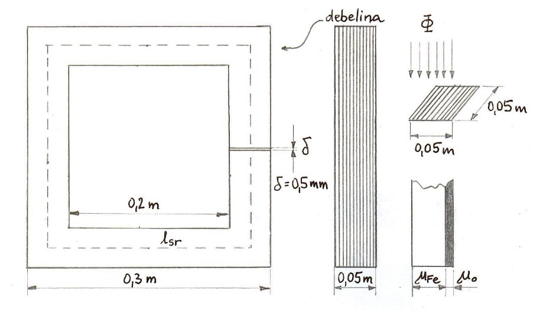
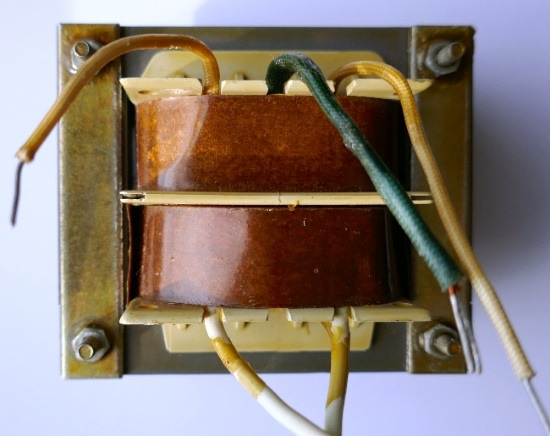

Naloga: Dimenzioniranje enofaznega transformatorja
Enofazni transformator brez zračne reže ima jedro v obliki kvadratnega okvirja. Faktor polnjenja železnega jedra je $f_{Fe} = 0,85$. Magnetilna karakteristika feromagnetne pločevine, iz katere je sestavljeno železno jedro transformatorja, je podana na diagramu $B = f(H)$.

Slika 1: Dimenzije transformatorskega jedra iz feromagnetne pločevine.

Slika 2: Statična magnetilna krivulja (B-H) feromagnetne pločevine.
- Določite število primarnih ovojev $N_1$, da bo pri pritisnjeni napetosti $U_1 = 220 \text{ V}, f = 50 \text{ Hz}$ maksimalna gostota magnetnega pretoka v železnem jedru $B = 0,8 \text{ T}$.
- Določite potrebno število ovojev sekundarnega navitja $N_2$, da bo v prostem teku sekundarna napetost na izhodnih sponkah transformatorja $U_2 = 380 \text{ V}$.
- Določite nazivno moč transformatorja $S_n$, če je faktor polnjenja transformatorskega okna $f_{Cu} = 0,3$ pri navitju, ki je obremenjeno s specifično gostoto toka $j = 2 \cdot 10^6 \text{ A/m}^2$.
- Za koliko se spremeni magnetilni tok transformatorja, če v železnem jedru naredimo zračno režo $\delta = 0,5 \text{ mm}$?
Poenostavljena skica jedra transformatorja
Rezultati v živo:
Ovoji primarja $N_1 = $ 583
Ovoji sekundarja $N_2 = $ 1007
Tok za Fe $I_{\mu,Fe} = $ 0.17 A
Tok za zrak $I_{\delta} = $ 0.00 A
Skupni magnetilni tok $I_{\mu} = $ 0.17 A
a) Izračun primarnih ovojev $N_1$
Upoštevamo predpostavko, da imamo idealen transformator brez lastnih ohmskih in induktivnih upornosti. To pomeni, da je pritisnjeni napetosti na primarnem navitju enaka inducirana protinapetost $U_1 = E_1$.
Z uporabo Faradayovega zakona smo pri prvi vaji že izpeljali enačbo za inducirano napetost, ki se glasi:
Pomemben detajl tu je razumevanje preseka. Prečni presek jedra $S$, ki vodi magnetni pretok $\Phi$, se efektivno zmanjša na $S_{Fe}$ z upoštevanjem faktorja polnjenja železnega jedra $f_{Fe}$.

Slika 3: Primer E-I oblike transformatorskega jedra.

Slika 4: Primer C-I oblike transformatorskega jedra.
Sedaj lahko preuredimo zgornjo enačbo in izrazimo potrebno število ovojev $N_1$:
Opomba: Presek $S$ določimo iz skice kvadratnega jedra z dimenzijami stebra $50 \text{ mm} \times 50 \text{ mm}$, zato je $S = 50 \text{ mm} \cdot 50 \text{ mm} = 2500 \text{ mm}^2 = 25 \cdot 10^{-4} \text{ m}^2 = 5 \cdot 5 \cdot 10^{-4} \text{ m}^2$. Pretvornik za površino v metre si zapomnimo: $1 \text{ mm}^2 = (10^{-3} \text{ m})^2 = 10^{-6} \text{ m}^2$.
b) Izračun sekundarnih ovojev $N_2$
Prosti tek transformatorja pomeni, da je stroj magnetno polno vzbujen, na izhodnih sponkah pa nima priključenega zunanjega bremena. Zaradi predpostavke $U_1 \approx E_1$ in $U_2 \approx E_2$ velja prestavno razmerje:
Iz te relacije preprosto izrazimo in izračunamo $N_2$:
c) Dimenzioniranje transformatorskega okna in nazivna moč $S_n$
Dimenzije transformatorskega okna (odprtine znotraj jedra) določajo razpoložljivo površino $S_{ok}$ za namestitev navitij. Zaradi izolacije žice, tuljavnikov in praznega zraka med okroglimi žicami vpeljemo faktor polnjenja transformatorskega okna $f_{Cu}$.

Slika 5: Ilustracija polnilnega faktorja $f_{Cu}$ realnega transformatorja.
Površino transformatorskega okna $S_{ok}$ odčitamo iz podane geometrije (širina $150 \text{ mm}$ x višina $200 \text{ mm}$, pri čemer je iz skice višina okna $200$, širina $150$):
Uporabna površina za baker $S_{Cu}$ (ker sta v oknu dve navitji, vzamemo polovico za primarno navitje):
Prerez enega samega vodnika (ovoja) primarnega navitja $S_{Cu1}$ je enak celotni razpoložljivi bakreni površini enega navitja, deljeni s številom ovojev $N_1$:
(Opomba: uradni PDF rešitev poenostavljeno vzame velikost okna $200 \times 200$, a po naši skici in logiki je širina okna $300 - 50 - 50 = 200 \text{ mm}$? V PDF rešitvi je zapisano $0,2 \cdot 0,2$. Vzemimo $200 \times 200 \text{ mm}$ za $S_{ok} = 0,04 \text{ m}^2$, kot podaja avtor.)
Z znano dovoljeno gostoto toka $j = 2 \text{ A/mm}^2$ ($2 \cdot 10^6 \text{ A/m}^2$) izračunamo nazivni primarni tok:
Nazivna moč (navidezna moč transformatorja v kVA):
d) Vpliv zračne reže na magnetilni tok
V prejšnji vaji smo se že spoznali z določitvijo magnetilnega toka z Amperovim zakonom (pot po feromagnetnem materialu in zračni reži). Srednja dolžina magnetne silnice lsr v jedru je:
Brez zračne reže (samo feromagnetno jedro): Iz magnetilne krivulje pri željeni gostoti pretoka $B = 0,8 \text{ T}$ odčitamo $H_{max} = 140 \text{ A/m}$. Magnetilni tok $I_{\mu,Fe}$ je:
Z zračno režo $\delta = 0,5 \text{ mm}$: K toku $I_{\mu,Fe}$ moramo prišteti še tok, ki premosti upornost zračne reže. Za zračno režo nimamo "izgubnega faktorja" polnjenja, zato gostota magnetnega polja pade v obratnem sorazmerju s prejšnjim faktorjem:
Potrebni dodatni tok za zračno režo:
Skupni tok s prisotno zračno režo znese torej:
Ugotovimo, da mikroskopska reža velikosti pol milimetra poveča potrebno magnetilno moč za skoraj faktor 3 ($0,50 \text{ A}$ proti $0,17 \text{ A}$). V praksi se zato transformatorji sestavljajo zelo natančno z vmesnim "prepletanjem" lamel, da je teh rež čim manj.
Preveri svoje znanje
1. Kviz: Sprememba faktorja polnjenja bakra ($f_{Cu}$)
Če bi uporabili izboljšano tehniko navijanja in žice pravokotnega preseka namesto okroglih, bi lahko faktor polnjenja $f_{Cu}$ povečali na $0,45$ (namesto $0,30$). Ostali parametri in mere ostanejo enaki. Kolikšna bi bila nova nazivna moč transformatorja $S_n$ v kVA?
Prikaži namig/rešitev
Nazivna moč $S_n$ je premo sorazmerna s površino bakra $S_{Cu1}$. Če se faktor $f_{Cu}$ poveča za faktor $0,45 / 0,30 = 1,5$, se bo za enako gostoto toka $j$ tok povečal za faktor $1,5$, s tem pa tudi nazivna moč. Torej $S_{n,nov} = 4,4 \text{ kVA} \cdot 1,5 = 6,6 \text{ kVA}$.
2. Kviz: Uporaba lamel v jedru
Kaj je glavni razlog, da se transformatorska jedra izdelujejo iz tankih, med seboj električno izoliranih lamel, namesto iz masivnega kosa železa?